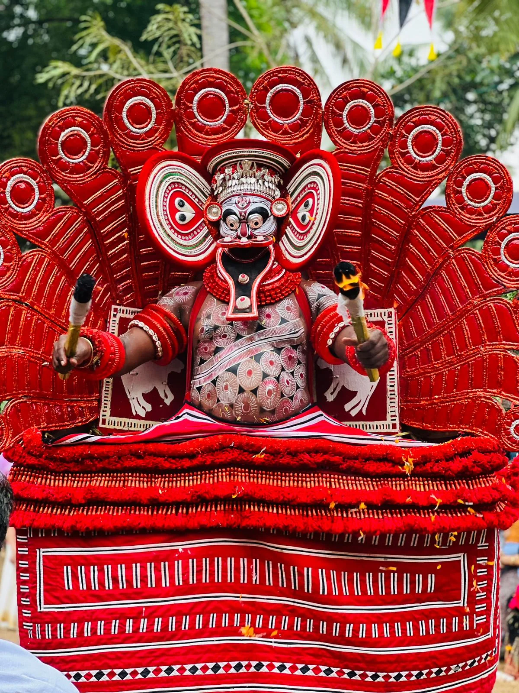

Kuttichathan Theyyam - The Mischievous and Mysterious
Kuttichathan Theyyam is one of the most fascinating and popular Theyyams in the ritual art tradition of North Kerala, especially in Kannur ans Kasargod districts. Known for its mystical powers, playful behavior, and deep spiritual symbolism, Kuttichathan occupies a unique place in the pantheon of Theyyam deities. He is often considered a divine child with magical powers who fights against injustice and protects his devotees. Kuttichathan Theyyam is also known as Sasthappan Theyyam
The story of Kuttichathan has many versions, but all potray him as a powerful, intelligent, and misunderstood figure. According to one version, he was the son of a Brahmin and a lower - caste woman, which made him an outcast in society. Despite being born with extraordinary abilities and wisdom, he was mistreated and humiliated. Kuttichathan began to rebel against the upper - caste hypocrisy and injustice. Using his magical powers, he played tricks on the priests and landlords, exposing their cruelty. After his death, he was elevated to divine status by the common people, who began to worship him as a protector spirit.
Kuttichathan Theyyam is lively dramatic, and often humorous, reflecting the spirit's mischievous nature. The face is painted in bright red and black with bold white patterns, giving a fierce yet childlike appearance. The Theyyam wears a red costume with palm - leaf decorations and a circular crown. The overall look is energetic and colorful. The performer dances energetically with sudden bursts, jumpsand laughter. Kuttichathan interacts directly with the audience, sometimes mocking or imitating people in a playful tone. Sometimes, the performer carries symbolic items like chains, sticks, or magical objects.
Kuttichathan Theyyam is usually performed in family shrines and temples during the Theyyam season. People believe that the spirit of Kuttichathan can remove black magic and evil spirits, cure diseases, bring justice to the oppressed and fulfilled personal wishes. Kuttichathan is seen as a rebel deity - a protector of the common people against social inequality. It is a bold expression of resistance, justice, and divine mischief. Through rhythm, dance and tradition, this theyyam keeps alive the memory of a spirit who fought for fairness and dignity. He remains a symbol of hope, protection, and spiritual energy in the hearts of thousands in Kerala.